Questão 1 · Acidentes Vasculares Cerebrais AVC · Neurologia · 4000183898Escala de AVC do NIHSS National Institutes of Health Strole Scale Uma mulher de 76 anos, sem história médica pregressa relevante, é levada ao prontosocorro devido à queixa de hemiplegia completa à esquerda de início há duas horas. Ao exame físico, apresentava o seguinte: quadro de extinção (negligência) à esquerda e desvio tônico do olhar para a direita; força grau 0 (escala MRC) à esquerda; reflexos grau 3+ à esquerda e 2+ à direita; Sinal de Babinski à esquerda; pontuação inicial de 17 na escala de AVC do National Institutes of Health (NIHSS). Sua tomografia computadorizada de crânio sem contraste está reproduzida abaixo. Nesse momento, a conduta indicada para essa paciente é realizar
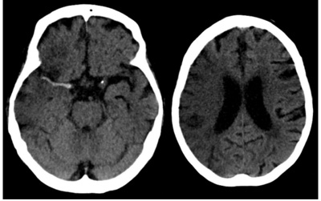
A trombectomia mecânica.
B alteplase intravenosa.
C tenecteplase intra-arterial.
D hemicraniectomia descompressiva.
Questão 2 · Acidentes Vasculares Cerebrais AVC · Neurologia · Trombólise Endovenosa · 4000183147Qual das opções abaixo é uma contraindicação absoluta ao tratamento com trombólise endovenosa com rtPA em paciente com acidente vascular cerebral isquêmico?
A Gravidez.
B Uso de varfarina com resultado de RNI 1,9.
C Crise epiléptica no início dos sintomas.
D Início dos sintomas há quatro horas.
Questão 3 · Hemorragia Subaracnoidea HSA · Neurologia · Quadro Clínico · 4000182896Mulher de 70 anos, apresentou quadro súbito de cefaleia, vômitos e rebaixamento do nível de consciência há 4 horas. AP: tabagismo e hipertensão arterial descontrolada. Exame físico: mau estado geral, Glasgow 7, PA 170x100 mmHg, FC 80 bpm, FR 18 irpm. Realizada tomografia de crânio (a seguir). A conduta é:
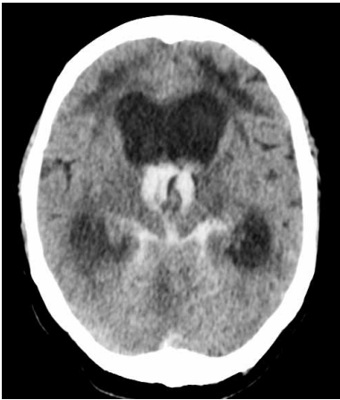
A craniectomia descompressiva.
B terceiroventriculostomia endoscópica.
C derivação ventricular externa.
D manitol em bolus.
Questão 4 · Trombólise Endovenosa · Contraindicações ao uso dos f ibrinolíticos · Cardiologia · 4000182844Que condição, dentre as abaixo,
A Uso de varfarina com INR > 1,7
B Suspeita de hemorragia subaracnóidea
C Presença de endocardite bacteriana
D Presença de meningioma
Questão 5 · Exames de Imagem Neurovascular · Acidentes Vasculares Cerebrais AVC · Neurologia · 4000182581Paciente de 36 anos apresenta quadro súbito de hemiparesia e afasia. Ela esteve gestante até 40 dias atrás, sendo seu parto normal e a termo. Ele chega à unidade de saúde, uma hora após o início dos sintomas. Observe a imagem da tomogra a a seguir. Com relação à terapêutica, assinale a alternativa correta.
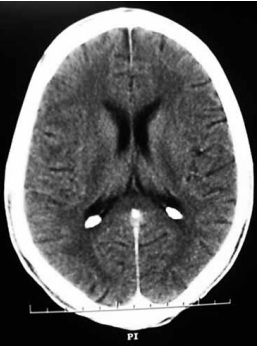
A A hemicraniectomia descompressão está indicada neste momento.
B O uso de manitol 0,25% está indicado neste momento.
C Para infusão do trombolítico, a pressão arterial deve ser mantida < 185 x 110 mmHg.
D O parto recente contraindica a realização da trombólise.
E Para melhor evolução clínica, a glicemia capilar deve ser mantida entre 60 e 100 mg/dL.
Questão 6 · Hemorragia Subaracnoidea HSA · Neurologia · Cef aleia Induzida por Hemorragia Subaracnoidea · 4000182180Paciente de 23 anos, previamente hígida, é trazida ao pronto-socorro devido queixa de cefaleia súbita e de forte intensidade. Familiares negam perda de consciência, assim como negam episódios prévios semelhantes. Ao exame: sonolenta e confusa (Glasgow 13), pupilas isocóricas e fotorreagentes, sem dé cits neurológicos focais, apresentando rigidez de nuca (+2/+4), afebril e estável hemodinamicamente. Qual a medida inicial indicada?
A Tomografia computadorizada de crânio.
B Punção lombar diagnóstica.
C Administração de solução salina hipertônica 3%.
D Intubação orotraqueal seguida por hiperventilação controlada.
Questão 7 · Acidentes Vasculares Cerebrais AVC · Neurologia · Trombólise Endovenosa · 4000181682Paciente do sexo masculino, 62 anos, pardo, é levado ao pronto-socorro por apresentar fala enrolada e di culdade para andar há 1 hora. Esposa conta que o marido é hipertenso, mas faz tratamento irregular porque acha que o remédio deixa ele tonto. Nega outras comorbidades. Ao exame físico, apresenta-se em regular estado geral, desorientado, PA: 198 × 130 mmHg, confirmada em duas medidas, FC: 124 bpm, eupneico, afebril, corado e hidratado. O exame neurológico mostrou hemiplegia à direita com desvio de rima. Tomogra a sem sinais de sangramento. Entre as opções abaixo, a melhor conduta imediata é:
A Trombólise com rt-PA imediata.
B Captopril sublingual.
C Nitropussiato intravenoso.
D Anticoagulação com heparina não fracionada.
Questão 8 · Investigação · Hemorragia Subaracnoidea HSA · Líquor · 4000181249Mulher, 43 anos, apresenta cefaleia súbita de forte intensidade, associada a náusea e vômito, durante relação sexual, há cerca de 2 horas. Exame físico: bom estado geral, estável hemodinamicamente, afebril; exame neurológico revela presença de rigidez de nuca e ausência de A conduta diagnóstica correta é realizar
A punção lombar e coleta de líquor.
B Doppler transcraniano.
C ressonância de crânio.
D tomografia de crânio com contraste.
E analgesia e seguimento ambulatorial.
Questão 9 · Trombólise Endovenosa · 4000178544Homem de 63 anos, portador de hipertensão arterial sistêmica e diabetes hipertensiva e brilação atrial paroxística, foi levado por familiares a uma unidade de emergência, com quadro neurológico de instalação abrupta havia cerca de 2 horas. Segundo informaram seus familiares, o paciente tinha começado a “falar embolado” e mostrava di culdade para movimentar o membro superior direito, tendo evoluído para progressivo rebaixamento do nível de consciência, o que motivou a família a levá-lo para a unidade. Não houve interrupção da administração de fármacos de uso crônico (valsartana, amlodipina e amiodarona). No exame físico, o paciente estava em coma super cial, exibindo evidente hemiparesia de predomínio braquiofacial direito. Sua pressão arterial (ambos membros superiores) era de 160 × 100 mmHg, sendo o ritmo cardíaco irregular, em 2 tempos, com bulhas normofonéticas e sem sopros. A glicemia capilar era de 320 mg/dL, enquanto o eletrocardiograma revelou apenas ritmo de brilação atrial com resposta ventricular inferior a 110 batimentos por minuto. Uma tomogra a computadorizada de crânio, laudada em 45 minutos após sua chegada à unidade, mostrou-se sem anormalidades aparentes. Visando-se ao melhor prognóstico do paciente, com menores limitações neurológicas funcionais futuras, a estratégia terapêutica que deve ser instituída imediatamente é
A reverter a fibrilação atrial paroxística com cardioversão química.
B administrar terapia trombolítica intravenosa com rtPA.
C infundir insulina intravenosa em bólus.
D controlar a hipertensão arterial com nitroprussiato de sódio.
Questão 10 · Acidentes Vasculares Cerebrais AVC · Trombólise Endovenosa · 4000170553Tratamento da Fase Aguda do Acidente Vascular Cerebral Isquêmico Uma mulher de 72 anos de idade deu entrada no hospital, levada por familiares, que relataram que ela apresentara “fraqueza muscular súbita em braço e em perna esquerdos” há 30 minutos. É previamente hipertensa, porém bem controlada, e estava em investigação para uma arritmia cardíaca (sic). Ao exame físico, foi constatada uma hemiplegia dimidiada e um desvio de rima labial e do olhar conjugado. Realizou uma TC de crânio sem contraste, que descartou eventos hemorrágicos. Com base nesse caso hipotético e considerando que a paciente tem critérios de elegibilidade para a terapia trombolítica, é uma contraindicação à trombólise no acidente vascular encefálico o(a)
A diagnóstico clínico de acidente vascular cerebral isquêmico, causando
B hemorragia gastrointestinal nos últimos 21 dias.
C evento isquêmico prévio ou o trauma cranioencefálico grave há cinco anos.
D evidência de isquemia na tomografia.
E idade acima de setenta anos.
Questão 12 · Prof ilaxia Secundária · Investigação Etiológica · 4000170065Mulher de 30 anos apresentou acidente vascular encefálico (AVE) há um mês. AP: sem comorbidades. Exame físico: s e m dé cits neurológicos. Exames: tomogra a cervical, tomogra a encefálica e holter: normais, ecocardiograma transesofágico: persistência de forame oval pérvio com diâmetro de 0,5 x 0,7 cm. A conduta mais adequada para a prevenção de recorrência de AVE é:
A antiagregação plaquetária.
B anticoagulação.
C fechamento do forame oval.
D seguimento ambulatorial.
Questão 13 · Neurologia · Trombólise Endovenosa · 4000169915Tratamento da Fase Aguda do Acidente Vascular Cerebral Isquêmico Considerando-se a trombólise no acidente vascular cerebral, assinale a alternativa correta.
A A dosagem plena deve ser ministrada em bolus em meia hora.
B A tomografia de controle deve ser realizada a cada 6 horas pós-finalização da trombólise, nas primeiras 24 horas.
C A pressão arterial deve ser mantida < 180 x 105 mmHg durante e/ou após a trombólise.
D A introdução de aspirina deve ocorrer em até 1 hora pós-finalização da trombólise.
E A introdução de enoxaparina deve ocorrer em até 6 horas pós-finalização da trombólise.
Questão 14 · Exames de Imagem Neurovascular · Síndromes Neurovasculares · Acidentes Vasculares Cerebrais AVC · 4000169680Paulo, 49 anos, caminhoneiro, com antecedente de hipertensão arterial com tratamento irregular, é trazido ao pronto- socorro por quadro súbito de hemiparesia à direita e afasia, cerca de 45 minutos atrás. Pontua 14 na escala do NIHSS ( National Institute of Health Stroke
A Administrar 300 mg VO de ácido acetil salicílico.
B Iniciar alteplase intravenosa.
C Realizar exame de ressonância nuclear magnética.
D Realizar tomografia de crânio.
Questão 15 · Neurologia · Escala de AVC do NIHSS National Institutes of Health Strole Scale · 4000167112Sobre a escala NIHSS
A a presença de ataxia pode ser avaliada pela manobra index-nariz ou calcanhar-joelho.
B a presença de mutismo causado por barreira mecânica (cânula orotraqueal, por exemplo) caracteriza pontuação máxima nos itens disartria e linguagem.
C a pontuação, nos casos em que o paciente não possui um membro (amputação), deve ser máxima na avaliação de força desse membro.
D a heminegliência deve ser pontuada no paciente não contatuante.
E a escala de NIHSS é mais importante nos casos de AVC hemorrágico.
Questão 16 · Acidentes Vasculares Cerebrais AVC · Neurologia · 4000166241Tratamento da Fase Aguda do Acidente Vascular Cerebral Isquêmico Homem, 78 anos de idade, apresenta quadro súbito de hemiparesia direita e dificuldade para falar há duas horas da admissão no PS. Após a realização de exame neurológico rápido, qual das seguintes condutas é a mais adequada?
A Avaliação de eletrólitos e realização de ressonância magnética de crânio com perfusão cerebral imediata.
B Avaliação de glicemia capilar e realização de eletroencefalograma na urgência.
C Avaliação de glicemia capilar e avaliação com tomografia de crânio e angiotomografia.
D Avaliação de eletrólitos e coleta de líquido cefalorraquiano.
Questão 17 · Ataque Isquêmico Transitório · Neurologia · 4000166193O ataque isquêmico transitório ocorre quando o episódio de disfunção neurológica, de origem isquêmica, apresenta duração inferior a
A duas horas.
B quatro horas.
C seis horas.
D doze horas.
E 24 horas.
Questão 18 · Neurologia · Trombólise Endovenosa · Trombectomia Mecânica · 4000165547Mulher de 62 anos de idade, diabética e tabagista, apresentou há 5 horas e 30 minutos diminuição de força nos membros superior e inferior esquerdos e fala empastada. Na sua chegada ao Pronto-Socorro de um hospital terciário, sua pressão arterial era 160 x 100 mmHg. A frequência cardíaca era de 88 bpm, rítmico e a glicemia capilar 220 mg/dL. A ausculta cardíaca era normal. O exame neurológico mostrou hemiplegia esquerda completa, desvio do olhar para a direita e heminegligência. A pontuação na escala de avaliação NIHSS ( tomogra a de crânio não mostrou sinais de hemorragia intracraniana. A pontuação na escala ASPECTS foi de 8. Qual deve ser a conduta neste atendimento inicial?
A Realizar angioressonância arterial de crânio e vasos cervicais e, se oclusão de artéria carótida cervical, indicar trombectomia mecânica.
B Realizar angiotomografia arterial de crânio e vasos cervicais e, se oclusão de artéria cerebral média, indicar trombectomia mecânica.
C Realizar angiotomografia arterial de crânio e vasos cervicais e, se oclusão de artéria cerebral média, indicar trombólise intravascular.
D Realizar angioressonância arterial de crânio e vasos cervicais e, se oclusão de artéria carótida intracraniana, indicar trombólise intravenosa.
Questão 19 · Acidentes Vasculares Cerebrais AVC · Neurologia · Trombectomia Mecânica · 4000164647Uma paciente feminina, 49 anos, sem antecedentes mórbidos, é levada à emergência por seu esposo por estar há duas horas “sem força no braço e perna esquerdos”. Ao exame apresenta pressão arterial de 123/76 mmHg; frequência cardíaca de 88bpm; temperatura axilar de 36,5°C e frequência respiratória de 18irpm, escala de coma de Glasgow com 15 pontos, desvio da rima labial para a direita, força grau 3 em membro inferior esquerdo e grau 2 em membro superior esquerdo. A tomogra a de crânio de urgência não mostrou anormalidades de sinal do parênquima cerebral, demonstrando apenas hiperdensidade da artéria cerebral média direita. Foi então realizada infusão de medicação brinolítica. A infusão iniciou após três horas e 20 minutos do início do dé cit neurológico e durou uma hora. Após uma hora do término da infusão a paciente persistia com os déficits inalterados. Assinale a alternativa correta com relação à conduta do caso apresentado.
A A trombectomia mecânica só está indicada dentro de um intervalo de quatro horas e 30 minutos após o início do déficit neurológico. Após esse intervalo, não apresenta benefício e apenas aumenta o risco de transformação hemorrágica.
B Não há indicação de realizar ressonância magnética de crânio em caráter de urgência. Mesmo com dissociação (mismatch) clínico-radiológica na fase de difusão ou penumbra isquêmica na fase de perfusão, a trombectomia mecânica é contraindicada após tentativa de fibrinólise, pelo alto risco de complicações hemorrágicas.
C Realizar ressonância magnética de crânio em caráter de urgência. Se for constatada dissociação (mismatch) clínico-radiológico na fase de difusão ou área significativa de penumbra isquêmica em sua fase de perfusão, a paciente é candidata a arteriografia de vasos cerebrais para tentar trombectomia mecânica.
D Realizar arteriografia de vasos cerebrais para trombectomia mecânica, pois não houve critérios de reperfusão com a administração de fibrinolíticos. A realização de ressonância magnética de crânio apenas atrasa o tempo até a trombectomia mecânica. Considerar craniectomia descompressiva precoce.
E A ressonância magnética de crânio em caráter de urgência não está indicada. A trombectomia mecânica é indicada na presença de trombos em grandes artérias cerebrais, mesmo sem penumbra isquêmica significativa, pois a reperfusão da área isquêmica reduz o risco de edema cerebral e hemorragia.
Questão 20 · Síndromes Neurovasculares · Neurologia · 4000164484Assinale a alternativa correta quanto às manifestações clínicas do Acidente Vascular Encefálico isquêmico de acordo com o vaso ocluído.
A A cegueira bilateral é manifestação frequente da oclusão da artéria cerebral posterior.
B Hemiparesia contralateral e anosognosia ocorrem na oclusão da artéria cerebral média.
C Abulia e incontinência urinária são manifestações típicas da oclusão da artéria vertebral.
D Vertigem, náuseas e nistagmo são comuns na oclusão da artéria cerebral anterior.
Questão 21 · Investigação · Hemorragia Subaracnoidea HSA · Neurologia · 4000164238Homem de 50 anos, previamente hígido, com quadro de cefaleia súbita associada a vômitos e perda da consciência transitória durante realização de atividade física. Acompanhante relata não ter havido traumatismo craniano. Deu entrada no Pronto Atendimento consciente e lúcido, sem dé cits sensitivo-motores, com rigidez de nuca e presença do sinal de Brudzinski. Seu exame de tomografia computadorizada inicial sem contraste encontra-se em anexo. Qual a etiologia mais provável?

A Ruptura de malformação artério-venosa intracraniana.
B Hipertensão arterial (pico hipertensivo).
C Ruptura de aneurisma intracraniano.
D Vasculite do sistema nervoso central.
Questão 22 · Neuroanatomia · Pupilas Motricidade Ocular Intrínseca · Síndromes Pupilares · 4000172326A síndrome de compressão do terceiro par craniano (nervo oculomotor), alteração comum em aneurisma de artéria comunicante posterior, é caracterizada pela seguinte tríade:
A Ptose palpebral, miose e oftalmoplegia ipsilateral ao lado acometido.
B Ptose palpebral, miose e paralisia facial ipsilateral ao lado acometido.
C Ptose palpebral, midriase e oftalmoplegia ipsilateral ao lado acometido.
D Ptose palpebral, paralisia facial e otalgia ipsilateral ao lado acometido.
Questão 23 · Prof ilaxia Secundária · Estenose Carotídea · Investigação Etiológica e Prof ilaxia Secundária · 4000172184Homem de 65 anos de idade desenvolveu subitamente amaurose no olho esquerdo. O sintoma foi revertido em poucos minutos, mas voltou a ocorrer algumas horas depois, e na segunda oportunidade durou 2 horas. Tem doença arterial periférica e faz tratamento com antiagregantes plaquetários e estatinas. Foi realizada ultrassonogra a com doppler colorido que mostrou estenose carotídea maior que 50% bilateralmente. A conduta que mais diminui o risco de acidente vascular cerebral neste caso é:
A Angioplastia com Stent em carótida direita.
B Angioplastia com Stent em carótida esquerda.
C Endarterectomia de carótida direita.
D Endarterectomia de carótida esquerda.
E Nenhuma das anteriores.
Questão 24 · Acidentes Vasculares Cerebrais AVC · Trombólise Endovenosa · 4000171815Tratamento da Fase Aguda do Acidente Vascular Cerebral Isquêmico Mulher de 62 anos foi levada ao Pronto-Socorro pelos familiares após apresentar queda da própria altura e parar de falar há cerca de 45 minutos. É portadora de diabetes mellitus tipo II e arterial sistêmica. Teve um acidente vascular cerebral isquêmico frontoparietal direito há 5 semanas e cou com paresia do membro superior esquerdo. Faz uso domiciliar de enalapril 20mg de 12/12h, anlodipino 10 mg uma vez ao dia, metformina e gliclazida. Ao exame físico, PA: 170X102mmHg, FC: 80bpm. Estava alerta, mantinha a abertura ocular, porém não respondia aos comandos e apenas balbuciava palavras desconexas. Os exames respiratório e cardiovascular não apresentaram anormalidades. Apresentava hemiparesia direita, co m aumento do tônus muscular, hiper-reflexia e desvio da rima labial para a esquerda. O eletrocardiograma realizado à admissão não apresentou anormalidades. Tomografia do crânio evidenciou área de encefalomalácia frontal direita. Considerando as informações da paciente, assinale a alternativa que apresenta a conduta imediata MAIS ADEQUADA para essa paciente.
A Prescrever ácido acetilsalicílico e estatina de alta potência.
B Prescrever os anti-hipertensivos orais de uso habitual.
C Realizar terapia trombolítica com alteplase intravenosa.
D Realizar trombectomia mecânica.
Questão 25 · Neuroanatomia Vascular · Acidente Vascular Cerebral Isquêmico · 4000171579Aposentado de 72 anos, hipertensão arterial mal controlada, apresentou quadro súbito de hemiparesia desproporcionada em dimidio esquerdo. Ao ser avaliado pelo neurologista no pronto-socorro, notou-se que o paciente não percebeu uma leve percussão no lado esquerdo do seu corpo, estimulo este simultâneo e na mesma localização do lado direito. Quando foi requisitado a ele que desenhasse uma casa e uma árvore, o paciente desenhou apenas os lados direitos desses objetos. Diante de tais alterações, qual lobo cerebral foi afetado?
A Lobo parietal direito.
B Lobo temporal direito.
C Lobo occipital.
D Lobo frontal inferior direito.
Questão 26 · Hemorragia Subaracnoidea HSA · Tratamento · 4000170672O vasoespasmo é uma das principais complicações da Hemorragia Subaracnóide, seu pico de incidência é a partir de 72 horas. Qual dessas medidas possui o melhor nível de evidência para prevenção de vasoespasmo na Hemorragia Subaracnóide
A Nimodipina 60mg 4/4h.
B Enoxaparina 40mg sc 1 x /dia.
C Ácido Tranexâmico 250mg ev 1 vez ao dia.
D AAS 200mg ao dia.
Questão 27 · Neurologia · Escore ABCD2 · 4000151716Um plantonista de um serviço de emergência recebe um paciente com relato de um dé cit neurológico focal transitório (“fraqueza no lado direito”), que reverteu espontaneamente ainda no domicílio e a família não consegue informar com segurança quanto tempo ocorreu até a reversão. Sabe-se que pacientes com ataque isquêmico transitório têm probabilidade de ocorrência de um acidente vascular encefálico (AVE) maior nos 3 meses subsequentes. Qual das seguintes condições abaixo indica maior risco da ocorrência de AVE após o evento descrito acima?
A Uso regular de medicação anti-hipertensiva
B Duração do déficit menor que 30 minutos
C Presença de distúrbio visual durante o episódio
D Ser portador de diabetes mellitus.
Questão 28 · Neurologia · Trombólise Endovenosa · 4000146890O Acidente Vascular Cerebral (AVC) isquêmico vem tendo mudanças importantes quanto ao tratamento da fase aguda, principalmente relacionado ao uso da trambectomia mecânica. Sobre a trombectomia mecânica no contexto de AVC isquêmico, assinale a alternativa CORRETA.
A A trombectomia mecânica agora deve ser priorizada em detrimento da trombólise endovenosa, independente do tempo de início do quadro clínico.
B A trombectomia mecânica só tem benefício, após a falha do trombolítico e respeitando o limite de 3 horas após o inicio do quadro clínico.
C A seleção de pacientes candidatos à trombectomia mecânica leva em consideração somente se há contraindicações ao trombolítico endovenoso.
D Aqueles pacientes que percebem o déficit neurológico, somente ao acordar, não foram avaliados nos grandes estudos sobre trombectomia mecânica e, portanto, não podem ser submetidos à trombectomia mecânica, independente dos achados da tomografia de crânio ou método com perfusão.
E Os benefícios da trombectomia mecânica se mostraram principalmente para pacientes com oclusão proximal da circulação anterior e até 6 horas do início do quadro clínico, embora haja estudos com benefícios para janelas de tempo até maiores.
Questão 29 · Ataque Isquêmico Transitório · Neurologia · 4000145781Homem, 67 anos, procura atendimento após segundo episódio de perda de força em membro superior e inferior direito com recuperação total. Nega alteração em expressão de face, fala e sensibilidade. No exame físico, apresenta-se hipertenso, sem detecção de hipotensão postural, ritmo cardíaco irregular, força preservada em membros superiores e inferiores. Qual hipótese diagnóstica mais provável a ser considerada nesse caso?
A Ataque isquêmico transitório.
B Acidente vascular isquêmico.
C Transtorno conversivo.
D Síndrome de Von Recklinghausen.
E Hipoglicemia.
Questão 30 · Neurologia · Tratamento da Fase Aguda do Acidente Vascular Cerebral Isquêmico · 4000145688Homem, 50 anos, acorda com hemiparesia direita. Na avaliação, apresenta PA 190x110 mmHg e TC com hipodensidade parietal esquerda, sem desvio da linha média. O tratamento inicial desse paciente deve ser realizado com
A alteplase.
B estatina apenas.
C nitroprussiato de sódio.
D AAS e estatina.
E AAS e dose de ataque de Clopidogrel.
Questão 31 · Hemorragia Subaracnoidea HSA · Acidente Vascular Cerebral Hemorrágico · 4000145122Acidentes Vasculares Cerebrais AVC Sobre a escala de Hunt- Hess, o grau Ili é caracterizado por:
A Cefaleia leve e a mínima rigidez de nuca.
B Sonolência, confusão mental ou déficit focal moderado.
C Cefaleia moderada a grave, rigidez de, sem déficits motores
D Estupor, hemiparesia moderada a grave.
Questão 32 · Investigação · Hemorragia Subaracnoidea HSA · Acidente Vascular Cerebral Hemorrágico · 4000145121Sobre o papel da TC de crânio no diagnóstico da Hemorragia subaracnóidea (HSA), assinale a alternativa correta
A Quanto mais tardiamente realizada, maior a sua sensibilidade.
B Pode ser substituído pela RM como primeiro exame de imagem.
C Vem sempre acompanhado da punção lombar para definição de diagnóstico.
D O diagnóstico de HSA é confirmada pela presença de imagem hiperatenuante no espaço subaracnóideo,
Questão 33 · Hemorragia Subaracnoidea HSA · Acidente Vascular Cerebral Hemorrágico · 4000144253Acidentes Vasculares Cerebrais AVC Paciente de 35 anos previamente hígido apresenta quadro súbito de cefaleia intensa e explosiva durante um jogo de futebol com os amigos, sendo imediatamente levado ao pronto socorro. Está sonolento mas responde ao ser questionado. Refere ter a dor de cabeça mais forte de sua vida e que está enxergando dobrado. Ao exame apresenta pressão arterial de 190 x 120 mmHg, está sonolento e apresenta oftalmoparesia e midríase no olho esquerdo. A tomogra a (sem contraste) inicial é mostrada na figura. Qual a conduta imediata mais adequada?
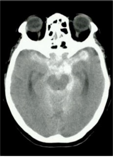
A Dexametasona endovenosa.
B Manitol endovenoso.
C Angiografia cerebral.
D Punção diagnóstica do líquido cefalorraquidiano.
Questão 34 · Acidentes Vasculares Cerebrais AVC · Neurologia · 4000143968Paciente com início súbito há três horas de perda de força em membros, fala arrastada, di culdade visual e cefaleia. Considerando-se o diagnóstico mais provável, a principal conduta a seguir seria:
A Administrar AAS.
B Administrar rTPA.
C Aguardar a evolução clínica.
D TC de crânio sem contraste.
Questão 35 · Acidentes Vasculares Cerebrais AVC · Neurologia · 4000143318Tratamento da Fase Aguda do Acidente Vascular Cerebral Isquêmico Paciente, 25 anos, sexo feminino, admitida com quadro de hemiplegia à direita e afasia, quadro iniciado há 6 horas. Possui antecedente mórbido pessoal de quatro abortamentos prévios. O diagnóstico e a melhor conduta, respectivamente, são
A acidente vascular encefálico devido a síndrome do anticorpo antifosfolípide; realização de tomografia de crânio sem contraste e dosagem de anticoagulante lúpico, anticardiolipina e antibeta-2-glicoproteína I, os anticorpos devem ser repetidos em 12 semanas.
B mielite transversa devido a síndrome do anticorpo antifosfolípide; realização de pulsoterapia com corticoide.
C acidente vascular encefálico devido a síndrome do anticorpo antifosfolípide; realização de tomografia de crânio com contraste e dosagem de anticoagulante lúpico, anticardiolipina e antibeta-2-glicoproteína I somente na fase aguda do evento.
D paralisia de Todd; indicação de craniotomia descompressiva de urgência.
E mielite transversa devido a síndrome do anticorpo antifosfolípide; realização de plasmaférese de urgência.
Questão 36 · Acidente Vascular Cerebral Hemorrágico · Acidentes Vasculares Cerebrais AVC · Neurologia · 4000143185Você está na emergência e avalia em sala vermelha, H.J.S., masculino, 63 anos, informando que há 2 horas apresentou quadro súbito de hemiparesia direita completa e proporcionada, grau 3. O colega que o antecedeu solicitou uma tomogra a que veio com a seguinte laudo: área hiperdensa com efeito de massa, localizado em núcleos da base à direita discreto edema perilesional, sugestivo de hematoma intraparenquimatoso. Sem antecedentes patológicos pregressos. Ao exame: Estado Geral regular, acordado, consciente, Glasgow 15, ACV: RCR 2T BNF s/S FC: 84 bpm, PA: 220/140mmHg, aparelho respiratório e abdômen normais. Diante do caso qual a conduta indicada no que tange ao manejo da pressão arterial (PA):
A Manter PA próximo a 140/90mmHg, usar no momento nitroprussiato de sódio.
B Manter PA abaixo de 120/80mmHg, usar no momento nitroprussiato de sódio.
C Manter PA próximo a 140/90mmHg, usar medicamentos anti-hipertensivos orais - IECA.
D Manter PA entre 140/90 e 180/110mmHg, usar nimodipino, prevenir vasoespasmo com hemodiluição por hidratação venosa.
E Manter PA abaixo de de 120/80mmHg, usar nimodipino, prevenir vasoespasmo com hemodiluição por hidratação venosa.
Questão 37 · Neurologia · Investigação Etiológica e Prof ilaxia Secundária · Acidente Vascular Cerebral Isquêmico · 4000143070A Sra. Maria do Carmo sofreu um AVC isquêmico de etiologia cardioembólica há cerca de 02 semanas e, após passar pela UTI e estabilizar sua condição clínica, está pronta p/ ir p/ casa. Assinale a ALTERNATIVA CORRETA no que se refere à opção de anticoagulante:
A Warfarina 5mg/kg de peso, c/ ajuste de INR a cada 02 semanas.
B Apixabana 2,5mg/2x/dia caso seu peso seja maior que 80kg e sua idade seja maior que 80 anos.
C Rivaroxabana 15mg/dia caso seu Clearance de Creatinina seja menor que 50.
D Dabigatrana 150mg/2x/dia caso seu Clearance de Creatinina seja menor que 30.
E Não usaria anticoagulante, apenas AAS 100mg/dia.
Questão 38 · Acidentes Vasculares Cerebrais AVC · Neurologia · 4000142577Tratamento da Fase Aguda do Acidente Vascular Cerebral Isquêmico Leia o caso clínico a seguir. Paciente do sexo feminino, de 45 anos, dá entrada no pronto-socorro da Santa Casa com hemiparesia direita e afasia, NIHSS 16, PA 130x90 mmHg, FC = 70 bpm. Acompanhante nega comorbidades prévias e refere que a mesma teve infecção por Covid-19 há cerca de um mês. Também refere que os sintomas iniciaram-se há cerca de uma hora. Foi então realizado uma tomogra a de crânio sem sinais de isquemia e/ou sangramento, exames laboratoriais e glicemia sem alterações. Diante do caso apresentado, qual deve ser a conduta?
A Internação aos cuidados da neurologia para prosseguir investigação com ressonância magnética de crânio.
B Administrar ataque de ácido acetilsalicílico na dose de 300 mg e internar a paciente em leito de terapia intensiva para prosseguir investigação etiológica.
C Realizar punção liquórica para descartar processo infeccioso meníngeo.
D Iniciar Alteplase na dose de 0,9 mg/kg e monitorizar a PA, nível de consciência e déficit neurológico com a escala de NIHSS.
Questão 39 · Hemorragia Subaracnoidea HSA · Acidente Vascular Cerebral Hemorrágico · 4000142498Acidentes Vasculares Cerebrais AVC Assinale a opção que apresenta uma doença que predispõe a hemorragia subaracnóidea.
A Esclerose múltipla.
B Doença renal policística autossômica dominante.
C Hipercolesterolemia familiar.
D Deficiência de alfa-1 antitripsina.
E Doença de Huntington.
Questão 40 · Hemorragia Subaracnoidea HSA · Acidente Vascular Cerebral Hemorrágico · 4000141674Acidentes Vasculares Cerebrais AVC Mulher de 52 anos apresenta cefaleia de forte intensidade há 5 dias. É encaminhada ao Serviço de Referência com hipótese diagnóstica de hemorragia subaracnóidea (HSA). AP: hipertensa e tabagista. TC de crânio: normal. Líquor, conforme imagem: Pode-se afirmar que
A a ausência de sinais de sangramento na TC indica classificação de Fisher 1, porém a presença de sangue no líquor confirma HSA.
B a prova dos 3 tubos sugere acidente de punção durante a coleta, não se podendo ainda afastar a hipótese de HSA.
C a ausência de sinais de sangramento na TC (Fisher 1) e a prova dos 3 tubos positiva sugerem rotura de aneurisma da circulação posterior.
D a prova dos 3 tubos sugere HSA, cuja etiologia deve ser investigada com angiografia digital cerebral ou angiotomografia.
Questão 41 · Acidentes Vasculares Cerebrais AVC · Neurologia · 4000140727Tratamento da Fase Aguda do Acidente Vascular Cerebral Isquêmico Paciente sexo feminino, 65 anos, vem ao pronto atendimento com queixa de diminuição da força em membro superior direito com início há 6 horas. Tem antecedentes de diabetes refere uso regular das medicações losartana 50 mg/dia, insulina nph 15 UI/dia. No exame físico, os dados alterados são: força grau 3 no membro superior direito e pressão arterial sistêmica: 170/95 mmHg, sem outros achados alterados. Em relação ao quadro clínico apresentado, qual a conduta ideal a ser tomada?
A Corrigir rapidamente a pressão arterial para níveis pressóricos menores que 120/80 mmHg.
B Esperar 24 h para realizar o exame de neuroimagem, pois se a paresia desaparecer por completo, o exame de imagem não será necessário.
C Submeter a paciente a um exame de neuroimagem imediatamente.
D Descartar hipoglicemia não é necessário na urgência, pois hipoglicemia não causa déficit neurológico focal.
Questão 42 · Quadro Clínico · Neurologia · Tratamento da Fase Aguda do Acidente Vascular Cerebral Isquêmico · 4000139795Um homem de 63 anos é trazido pelos familiares à unidade de pronto atendimento com relato de afasia e hemiparesia à direita, de início súbito, com 2 horas de evolução. O paciente é previamente hipertenso, diabético e tabagista, com tratamento irregular da hipertensão e do diabetes, sem relato de episódios prévios semelhantes. Em relação ao caso clínico apresentado e à conduta na sala de emergência, é correto afirmar:
A Se a glicemia capilar do paciente estiver 35 mg/dL, deve-se fazer a correção da hipoglicemia antes de se considerar outro tratamento farmacológico emergencial.
B Uma vez que eventos hemorrágicos são a causa mais frequente da apresentação clínica descrita, deve ser feita tomografia de crânio com contraste na avaliação inicial.
C Na tentativa de diminuir a progressão do trombo/coágulo, deve-se iniciar o tratamento com antiagregação plaquetária dupla na primeira avaliação, antes mesmo de uma tomografia de crânio.
D Como o quadro clínico ainda não permite a diferenciação entre um ataque isquêmico transitório e um acidente vascular encefálico, indica-se a realização de ressonância nuclear magnética antes de se considerar a possibilidade de trombólise.
E Se a pressão arterial estiver acima de 185/110 mmHg no momento da avaliação, o paciente terá contraindicação absoluta à terapia trombolítica por conta do risco de sangramento.
Questão 43 · Acidentes Vasculares Cerebrais AVC · Neurologia · Acidente Vascular Cerebral Isquêmico · 4000139124Marta, de 69 anos de idade, acompanhava seu esposo em uma consulta médica de rotina. O casal aguardava o atendimento quando, de repente, Marta começou a passar mal. O esposo dela, então, pediu ajuda, aos gritos, a rmando “Marta está tendo uma bilora, não fala nada com nada!” (sic). A médica Joana prontamente atendeu Marta e iniciou a avaliação dela. Na avaliação clínica da paciente, constatou-se hemiparesia à esquerda, anisocoria, afasia, nível 14 na escala de Glasgow (AO4/RV 4/RM6), pressão arterial de 190 mmHg × 120 mmHg, frequência cardíaca de 52 bpm e glicemia capilar de 294 mg/dL. Considerando o caso clínico precedente, julgue o próximo item. Na ausência de resposta às medidas estabelecidas na avaliação inicial, a equipe médica deve orientar Marta a retornar à sua residência, para repousar, e orientar o esposo dela a acionar o serviço de atendimento móvel de urgência (SAMU) caso surjam sinais de piora na paciente.
A Certo.
B Errado.
Questão 44 · Acidentes Vasculares Cerebrais AVC · Neurologia · 4000137945Tratamento da Fase Aguda do Acidente Vascular Cerebral Isquêmico Paciente sexo feminino, 72 anos, hipertensa e diabética, deu entrada no pronto-socorro com quadro de desvio de rima labial para direita e hemiparesia à esquerda, que começou há 2 horas da admissão. Os sinais vitais da entrada eram PA: 175 × 105 mmHg, FC: 82 bpm, FR: 14 ipm, SatO₂ : 95% em ar ambiente. Paciente realizou tomografia de crânio conforme imagem abaixo. O diagnóstico provável e a melhor conduta:
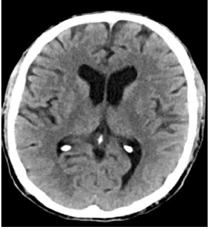
A Acidente vascular cerebral hemorrágico. Trombólise química, se não houver contraindicações.
B Acidente vascular cerebral hemorrágico. Craniectomia descompressiva.
C Acidente vascular cerebral isquêmico. Trombólise química, se não houver contraindicações.
D Acidente vascular cerebral isquêmico. Transferência para UTI e depois trombólise química.
E Acidente vascular cerebral isquêmico. Craniectomia descompressiva.
Questão 45 · Neuroanatomia Vascular · Quadro Clínico · 4000137447Homem, 78 anos, refere perda súbita da acuidade visual do olho direito que se reverteu em menos de 5 minutos (amaurose fugaz). Pode-se afirmar que a fonte embólica mais provável, neste paciente, foi a artéria carótida:
A externa direita.
B interna esquerda.
C interna direita.
D externa esquerda.
Questão 46 · Neurologia · 4000133917Em relação ao acidente vascular cerebral (AVC), assinale a alternativa incorreta.
A Deve-se evitar o tratamento preventivo do tromboembolismo pulmonar devido ao risco de desencadear ou agravar hemorragia intracraniana.
B A principal causa de AVC hemorrágico é a hipertensão arterial sistêmica, presente em mais de 70% dos pacientes.
C A hemorragia intraparenquimatosa cerebral está associada à angiopatia amiloide e à ruptura de pequenos vasos danificados pela hipertensão arterial.
D A hemorragia subaracnoidea, ao contrário da hemorragia no parênquima cerebral, tem como característica marcante a cefaleia intensa de início súbito.
Questão 47 · Investigação · Hemorragia Subaracnoidea HSA · Acidente Vascular Cerebral Hemorrágico · 4000133179Mulher de 45 anos vai ao pronto-atendimento queixando-se de cefaleia holocraniana intensa, que não cedeu com o uso de dipirona, de início súbito há 5h. Associa-se fotofobia, porém nega náuseas, vômitos, fonofobia ou febre. Nega episódios prévios de cefaleia semelhantes a este. É portadora de valvopatia mitral reumática e brilação atrial. Faz uso de rivaroxabana. Ao exame físico, PA 150/92mmHg, FC 92bpm. Apresenta-se alerta, parcialmente desorientada no tempo, orientada no espaço. Pares cranianos, motricidade e sensibilidade sem anormalidades. Sem sinais de irritação meníngea. Exame do fundo de olho sem anormalidades. A tomografia computadorizada do crânio não apresenta anormalidades. A conduta
A Prescrever sumatriptano.
B Realizar punção lombar.
C Solicitar ressonância magnética do encéfalo.
D Prescrever dexametasona parenteral.
Questão 48 · Acidente Vascular Cerebral Hemorrágico · Neurologia · 4000129925Acidente Vascular Cerebral Hemorrágico Intraparenquimatoso Homem de 65 anos apresenta queda da própria altura e é levado ao Pronto Atendimento. É portador de hipertensão arterial sistêmica e brilação atrial. Faz uso irregular de hidroclorotiazida, enalapril, anlodipino, clonidina e rivaroxabana. Ao exame físico, PA: 226X122mmHg, FC: 102bpm, FR: 22ipm. Apresenta-se sonolento, abre os olhos e verbaliza ao chamado e obedece aos comandos. Apresenta redução da força no dimidio esquerdo. Sem outras anormalidades. Exames de laboratório: Plaquetas 197.000/mm³; RNI 2,1; PTT 39s (controle 30s); Glicemia: 142mg/dL. Tomografia computadorizada do crânio: Considerando o caso descrito, assinale a alternativa que apresenta uma conduta
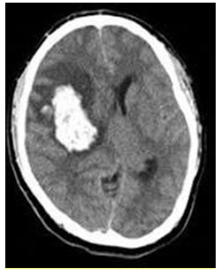
A Administrar concentrado de complexo protrombínico.
B Administrar glicocorticoide IV.
C Elevar a cabeceira a 30˚.
D Reduzir a PA sistólica para 140 a160mmHg com drogas parenterais.
Questão 49 · Neurologia · Investigação Etiológica e Prof ilaxia Secundária · Acidente Vascular Cerebral Isquêmico · 4000129612Para um paciente de 35 anos de idade com acidente vascular cerebral do tipo isquêmico, qual é o padrão-ouro para avaliar presença de forame oval patente?
A Doppler transcraniano com teste de microbolhas.
B Ecocardiograma transesofágico com teste de microbolhas.
C Ecocardiograma transtorácico com teste de microbolhas.
D Angiorressonância magnética de vasos cervicais.
Questão 50 · Acidentes Vasculares Cerebrais AVC · 4000129451Paciente de 60 anos, com hipertensão arterial e dislipidemia, em uso de hidroclorotiazida (25 mg/dia), deitou sentindo-se bem às 22 horas e acordou, às 6 horas da manhã seguinte, com hemiparesia direita e afasia. Em 30 minutos, houve recuperação completa dos sintomas. Foi trabalhar e, às 12 horas, os mesmos sintomas voltaram a ocorrer, tendo sido levado à Emergência às 14 horas. À admissão, a pressão arterial era de 200/70 mmHg, e o escore do NIHSS, de 17. Imagem da tomogra a computadorizada de crânio encontra-se reproduzida ao lado. Com base no quadro e na imagem, o paciente tem
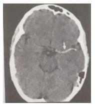
A contraindicação à trombólise intravenosa porque a pressão arterial está elevada, devendo receber antiagregante plaquetário na Emergência.
B contraindicação à trombólise intravenosa porque está fora de janela terapêutica, devendo receber antiagregante plaquetário na Emergência.
C contraindicação à trombólise intravenosa porque há um trombo na artéria cerebral média esquerda.
D indicação de trombólise intravenosa com rtPA.
Questão 51 · Tratamento da Fase Aguda do Acidente Vascular Cerebral Isquêmico · 4000129363Homem, 68 anos, hipertenso, diabético e portador de brilação atrial permanente, em uso prévio de Enalapril, Anlodipina e Varfarina, é trazido ao pronto-socorro por um quadro de redução do sensório, disfasia e hemiparesia proporcionada à esquerda de inicio há 1 hora. A Tomogra a Computadorizada de Crânio revelou pequenas áreas crônicas de infarto lacunar, mas sem alterações agudas. Qual das alternativas abaixo é a correta?
A Entubação orotraqueal e ventilação mecânica precoce reduzem a área isquêmica (“zona de penumbra”).
B Trombolise é contraindicada pelo uso prévio de anticoagulante oral.
C Aspirina é o único antitrombótico seguro e efetivo na fase aguda do AVC isquêmico.
D Hipotermia é um tratamento neuroprotetor poderoso no AVC isquêmico.
Questão 52 · Demências · Síndromes Cognitivas · Síndromes Neurovasculares · 4000127732Uma mulher de 76 anos com antecedentes de diabetes e hipertensão arterial foi trazida a emergência do Hospital de Base apresentando quadro súbito de hemiparesia desproporcionada a direita e di culdade para falar. Um exame mais detalhado mostrou que ela era capaz de obedecer comando simples, mas era incapaz de nomear ou repetir o nome de objetos que lhe foram mostrados. Com base nesses dados podemos afirmar que a paciente apresentava:
A Afasia sensitiva
B Afasia motora
C Disartria hipocinética
D Disartria hipofonica
Questão 53 · Neurologia · Trombólise Endovenosa · Trombectomia Mecânica · 4000124288Paciente hipertenso e diabético, de 55 anos, é admitido com hemiparesia direita e afasia de início há 1 hora. PA=240x110 mmHg. Realizou Tomografia de crânio normal. Sobre o caso apresentado, assinale a alternativa CORRETA.
A Como a tomografia está normal, será necessário realizar Ressonância magnética de crânio para definir o tamanho da área isquêmica e só assim definir sobre trombolítico.
B Segundo as novas diretrizes, esse paciente é candidato a receber trombolítico, não devendo reduzir seus níveis pressóricos, pois é baixo o risco para sangramento.
C Idealmente esse paciente deveria ser tratado em uma unidade de acidente vascular cerebral, reduzir os níveis pressóricos e avaliar as contraindicações, antes de iniciar trombolítico.
D O trombolítico de escolha para este paciente é a estreptoquinase em dose plena.
E A trombectomia mecânica só estaria indicada neste paciente, se a tomografia mostrasse área isquêmica bem definida.
Questão 54 · Tratamento Clínico · 4000124033Paciente, 59 anos, é admitido no Serviço de Emergência de um hospital de grande porte, acompanhado do irmão que refere quadro súbito de perda da força no braço direito, além de di culdade para comunicar-se. O quadro iniciou-se há 35 minutos, durante atividade física com alteres, na academia. Antecedentes: hipertensão arterial e tabagismo. Exame físico: sonolento, despertável, obedece a comandos simples, com hemiparesia direita completa com predomínio braquiofacial (força muscular grau II). Apresenta ainda afasia de condução. A nuca está livre. Pupilas isocóricas. PA = 190x110mmHg; FC = 88bpm; FR = 14irpm. Realiza tomogra a de crânio sem contraste que evidencia lesão hiperdensa tálamo-capsular de 2,1x2,5x1,7cm, sem desvio da linha média. Tendo em vista esse quadro, assinale a alternativa com o diagnóstico mais provável e a conduta imediata mais apropriada.
A Acidente vascular encefálico isquêmico transitório, descartando-se, diante do intervalo de tempo decorrido, terapia trombolítica de reperfusão.
B Hemorragia subaracnoide, devendo-se manter observação atenta da evolução, comrealização de arteriografia cerebral assim que possível.
C Acidente vascular encefálico hemorrágico, recomendando-se um adequado controlepressórico, tratamento de suporte clínico e repetir a tomografia nas primeiras 24 horas.
D Acidente vascular encefálico hemorrágico, recomendando-se cirurgia imediata, após controle pressórico.
E Acidente vascular encefálico isquêmico, tatando-se, diante do intervalo de tempo decorrido, de um candidato à terapia trombolítica de reperfusão com r-tPA, sendo, porém, necessário um adequado controle pressórico e certificação da ausência das demais contraindicações.
Questão 55 · Quadro Clínico · Tomograf ia Computadorizada · 4000120411Mulher de 53 anos foi encontrada por familiares caída e arresponsiva. AP: hipertensa e tabagista. Exame físico: comatosa (escala de coma de Glasgow 7), PA 180 x 100 mmHg, FC 70 bpm. TC de crânio (imagem a seguir). A hipótese diagnóstica é
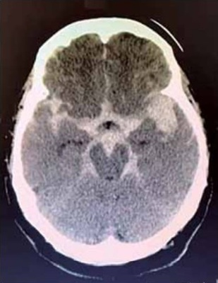
A acidente vascular cerebral intraparenquimatoso hipertensivo.
B hemorragia subaracnoidea por rotura de aneurisma cerebral.
C trombose de seio cavernoso.
D hematoma subdural agudo traumático.
Questão 56 · Neuroanatomia Vascular · 4000119097Paralisia de nervos cranianos, diplopia, tontura, náusea, vômitos, disartria, disfagia, soluços, ataxia de marcha. Um quadro de acidente vascular encefálico isquêmico com tais características clínicas provavelmente ocorreria em território vascular de artéria
A cerebral anterior.
B vértebro-basilar.
C cerebral média.
D cerebral posterior.
E carótida interna.
Questão 57 · Escore ABCD2 · 4000117551Que escore pode ser utilizado para prever o risco de Acidente Vascular Cerebral nos dias após um Ataque Isquêmico Transitório, em adultos?
A CHADS-VASC.
B ABCD2.
C APRI.
D NIHSS.
E ASPECTS.
Questão 58 · Exames de Imagem Neurovascular · Tratamento Geral · Tratamento Clínico · 4000112683Mulher de 47 anos de idade apresenta quadro de cefaleia há 1 dia. Familiar relata que a paciente apresentou episódios de confusão e evoluiu com duas crises convulsivas há cerca de 1 hora. Exame físico: PA: 238 x 172 mmHg; FC: 72bpm; T: 36,3 °C; cardiopulmonar: sem alteração; neurológico: escala de Glasgow: 13 (sonolenta e confusa); motricidade ocular extrínseca e pupilas normais; não há sinais de irritação meníngea ou de cit motor. Glicemia capilar: 95mg/dL. Nesse momento, é correto:
A baixar a PA de forma cuidadosa e lenta, com captopril oral (25 mg); a dose pode ser repetida após 30 minutos, se necessário.
B investigar a etiologia da elevação da PA, que é secundária ao reflexo de Cushing,sendo consequência de grave hipertensão intracraniana.
C prescrever nitroprussiato de sódio e realizar uma tomografia de crânio, assim que possível.
D prescrever labetalol e reduzir a PA sistólica para um valor abaixo de 140 mmHg paraevitar a progressão do possível sangramento no sistema nervoso central.
E realizar a tomografia de crânio imediatamente para definir se o quadro neurológico éisquêmico ou hemorrágico, antes de prescrever anti-hipertensivos.
Questão 59 · Neurologia · Tratamento da Fase Aguda do Acidente Vascular Cerebral Isquêmico · 4000110677Acidente Vascular Cerebral Isquêmico Homem, 52 anos, diabético há 8 anos, tabagista de longa data, procura serviço hospitalar relatando que há 3 horas apresentou hemiparesia à esquerda, súbita, associada a afasia global. Em prontuário está descrito que paciente recebera alta hospitalar recentemente, após infarto agudo do miocárdio há 12 dias (infarto sem supradesnivelamento de ST). Ao exame físico apresentava FC 70bpm, PA de 182 x 100 mmHg, ausculta cardíaca e pulmonar normal, exame neurológico, Glasgow 12, com força motora grau II em membros superior e inferior esquerdos. Glicemia capilar de entrada era de 98mg/dL e tomografia de crânio sem contraste sem sinais de sangramento. Qual a conduta preconizada?
A Monitorização, AAS, estatina e nitroprussiato intravenoso.
B Monitorização, trombólise com alteplase, AAS e estatina via oral imediatamente.
C Monitorização, repetição de tomografia computadorizada em 48 horas. Se não houver sangramento, AAS e estatina.
D Monitorização, AAS e estatina via oral.
E Monitorização, trombólise com alteplase. AAS poderá ser utilizado apenas após 24 horas.
Questão 60 · Tratamento da Fase Aguda do Acidente Vascular Cerebral Isquêmico · 4000100496Paciente masculino, 81 anos, deu entrada na unidade de urgência com quadro sugestivo de AVE isquêmico iniciado há 02 horas. Filha referiu evento vascular cerebral isquêmico há 60 dias. Era hipertenso e diabético há 08 anos. Exame físico inicial demonstrava hemiparesia direita com afasia e NIH de 23 pontos. Pressão arterial na chegada estava em 190x140mmHg, mas após tratamento estabilizou em 140x110mmHg. Realizou tomogra a de crânio que demonstrou hipodensidade correspondente a mais de 2/3 do território da artéria cerebral média. Qual alternativa que apresenta os critérios de EXCLUSÃO, pensando em realizar tratamento com trombólise venosa:
A Pressão Arterial na chegada ≥185x110mmHg e idade maior que 80 anos.
B Tomografia computadorizada de crânio com hipoatenuação correspondente a mais de 2/3 do território da artéria cerebral média e AVCI nos últimos 03 meses.
C Pacientes > 75 anos e NIH de 23 pontos.
D AVCI nos últimos 03 meses e Pressão Arterial na chegada ≥ 185x110mmHg.
Questão 61 · Angiograf ia Digital · Líquor · Quadro Clínico · 4000092713Uma paciente feminina, 43 anos, procura a emergência com queixa de cefaleia de forte intensidade com início súbito. Ao exame apresenta-se consciente, pontuando 15 na escala de coma de Glasgow. Não foi detectada rigidez de nuca ou qualquer alteração focal. É levantada a hipótese diagnóstica de hemorragia subaracnoide (HSA). Neste cenário clínico, qual a abordagem diagnóstica mais adequada para esse caso?
A Realizar angiografia cerebral imediatamente.
B Realizar punção lombar nas primeiras 2 horas.
C Realizar tomografia de crânio após 24 horas.
D Realizar tomografia de crânio sem contraste nas primeiras 6 horas.
E Realizar tomografia de crânio e punção lombar após 12 horas.
Questão 62 · Síndrome da Artéria Cerebral Média · Quadro Clínico · 4000086263Escala de AVC do NIHSS National Institutes of Health Strole Scale Homem, 65 anos, com história de "arritmia cardíaca", iniciou há uma hora com quadro súbito de hemiparesia esquerda completa (força muscular grau 3), alteração de sensibilidade do hemicorpo esquerdo e desvio parcial do olhar conjugado para direita. Não apresenta cefaleia, alteração de consciência, desorientação ou alteração de linguagem. Consegue obedecer a ordens e responder a perguntas simples sem di culdade. Eupneico, com boa perfusão periférica. Frente ao quadro clínico, marque a alternativa que lista os exames diagnósticos que devem ser solicitados para avaliação inicial desse paciente.
A Ultrassonografia de carótidas, ecocardiografia transesofágica e eletroencefalograma
B Ultrassonografia de carótidas, hemograma com plaquetas e eletrocardiograma
C Tomografia ou ressonância magnética de crânio, punção lombar, glicose sérica
D Tomografia ou ressonância magnética de crânio, eletrocardiograma e glicose sérica
Questão 63 · Síndromes Lacunares · 4000080731Um taxista de 56 anos vai à consulta médica após ter batido o carro ao fazer uma baliza. Ele tem história de brilação atrial e usa varfarina. Ao exame, percebe-se uma hemianopsia homônima poupando a visão macular. Esses achados são compatíveis com uma lesão em
A quiasma óptico.
B radiação óptica.
C corpo geniculado lateral.
D córtex occipital.
Questão 64 · Trombólise IntraArterial · Trombólise Endovenosa · 4000076186Idoso de 74 anos, com hipertensão arterial sistêmica, diabetes mellitus, brilação atrial crônica e dislipidemia, em tratamento regular com hidroclorotiazida, enalapril, amiodarona, metformina e sinvastatina, dá entrada na emergência, trazido por familiares, com quadro de dé cit neurológico focal caracterizado por hemiparesia direita de predomínio braquiofacial, associado à afasia não uente iniciado há 60 minutos. O paciente apresenta PA = 160 x 98mmHg e ritmo cardíaco irregularmente irregular, com FC = 86bpm. Uma tomogra a computadorizada axial de crânio, realizada cerca de 60 minutos após o paciente ter sido encontrado pelos familiares, não revela claras anormalidades agudas. Os demais exames complementares revelam apenas hiperglicemia (220mg/dL). A conduta indicada, nesse momento, é:
A complementar avaliação com ressonância magnética de encéfalo
B infundir insulina de ação rápida por via intravenosa
C administrar ácido acetilsalicílico
D iniciar trombólise com rtPA
Questão 65 · Trombólise IntraArterial · Trombólise Endovenosa · 4000075012Nos últimos anos, houve importante avanço no tratamento do acidente vascular isquêmico devido a trombólise venosa com rtPA. Entretanto, não são todos os pacientes que podem se bene ciar dessa terapêutica. Pode-se a rmar que são contra indicações para realização de trombólise: 1- PA = 150x100mmHg; 2- Plaquetas < 90.000; 3- Uso de heparina há uma semana; 4- IAM recente; 5- História prévia de AVE ou trauma craniano num período de 4 meses
A 3 e 4
B 1 e 3
C 2 e 5
D 2 e 4
Questão 66 · Trombólise IntraArterial · Neuroanatomia Vascular · Quadro Clínico · 4000072611Paciente do sexo feminino, 63 anos, em uso de AAS, losartan e metformina foi levada por familiares à emergência de um hospital geral poucos minutos após inicar um quadro súbito de desorientação, afasia e hemiplegia à esquerda. Foi realizada tomogra a computadorizada de crânio (abaixo) tão logo a paciente chegou no hospital. Os sinais vitais da paciente são: frequência cardíaca = 80 bpm; pressão arterial= 130 x 80 mmHg, frequência respiratória = 15 irpm; temperatura axilar= 37,2ºC e saturação periférica de oxigênio= 97%. Marque a opção CORRETA sobre o caso:

A Trata-se de acidente vascular cerebral hemorrágico e a trombólise com alteplase está contraindicada.
B Trata-se de acidente vascular cerebral hemorrágico e a trombólise com estreptoquinase está indicada.
C Trata-se de acidente vascular cerebral isquêmico e a trombólise com alteplase está indicada.
D Trata-se de acidente vascular cerebral isquêmico e a trombólise com alteplase está indicada.
E Trata-se de acidente vascular cerebral isquêmico e a trombólise com alteplase está contraindicada.
Questão 67 · Quadro Clínico · Neurologia · 4000010381Sobre isquemia cerebral de origem extracraniana, marque a correta:
A A arterite de Takayasu pode levar a isquemia cerebral extracraniana, sendo mais comum em homens a partir da sexta década de vida.
B A aterosclerose não é causa comum de ataque isquêmico transitório e de acidente vascular cerebral.
C Na displasia fibromuscular a cirurgia de endarterectomia de carótidas é sempre o melhor tratamento.
D A displasia fibromuscular ocorre mais frequentemente em pacientes do sexo feminino.
Questão 68 · Tratamento da Fase Aguda do Acidente Vascular Cerebral Isquêmico · 4000125562O acidente vascular cerebral (AVC) isquêmico vem tendo mudanças importantes, no que diz respeito ao tratamento de fase aguda nos últimos anos. Sobre esse aspecto do tratamento agudo do AVC isquêmico e suas atualizações, assinale a alternativa CORRETA.
A Drogas com estreptoquinase e uroquinase podem agora ser usadas como tratamento trombolítico na fase aguda, sem risco de sangramento.
B O tratamento trombolítico intra-arterial com alteplase é superior ao tratamento intravenoso, tanto em segurança como em melhor desfecho clínico, portanto, deve ser o preferido.
C A trombectomia mecânica endovascular está agora indicada em várias diretrizes para pacientes com oclusão de grandes vasos e com início dos sintomas de até 6 horas, sendo que alguns estudos encontraram benefícios para janela de tempo ainda maior como 16 e 24 horas do início dos sintomas em pacientes bem selecionados.
D A trombectomia mecânica deve ser priorizada frente ao trombolítico intravenoso, independente da janela de tempo do início dos sintomas.
E O melhor desfecho clínico e até redução de mortalidade foi obtido em pacientes que receberam a combinação de trombolítico intravenoso e em seguida intra-arterial, segundo estudos mais recentes.
Questão 69 · Trombólise IntraArterial · Trombólise Endovenosa · Trombectomia Mecânica · 4000121425Quanto às terapias de reperfusão no acidente vascular cerebral isquêmico, assinale a alternativa correta.
A Deve ser evitada em pacientes acima de 75 anos de idade devido aos riscos de complicações hemorrágicas.
B A associação de alte plase com heparina endovenosa é indicada em pacientes com baixo risco de sangramento.
C A terapia endovascular é opção para os pacientes com contraindicação absoluta à trombólise.
D A terapia endovascular mostrou-se ineficaz devido às altas taxas de trombose de stent.
E A trombólise com estreptoquinase é reservada para pacientes com NIH Stroke Scale menor que 5.
Questão 70 · Fatores de Risco · Valor Preditivo Positivo · Valor Preditivo Negativo · 4000121082No Brasil, o acidente vascular cerebral é a segunda causa de morte e principal causa de incapacidade. O seu principal fator de risco preditivo é a:
A dislipidemia
B tabagismo
C diabetes mellitus.
D hipertensão arterial sistêmica.
Questão 71 · Investigação · 4000113559Homem, 34 anos, sem antecedentes mórbidos, com história de cefaleia de início súbito, intensa, há 12 horas, evoluindo com síncope, dá entrada no pronto socorro com rebaixamento do sensório e hemiplegia à direita. Ao exame, sinais evidentes de irritação meníngea. Em função da principal hipótese diagnóstica neste caso, o paciente foi prontamente submetido ao exame A, o qual não confirmou a suspeita inicial. Como a suspeita clínica não poderia ser definitivamente afastada através do exame A, o paciente foi então submetido ao exame B, o qual confirmou o diagnóstico. Os exames A e B são respectivamente:
A TC de encéfalo não contrastada e TC de encéfalo com contraste.
B TC de encéfalo não contrastada e punção lombar.
C TC de encéfalo não contrastada e RNM de encéfalo.
D TC de encéfalo contrastada e punção lombar.
E Punção lombar e TC de encéfalo não contrastada.
Questão 72 · Neurologia · Trombólise Endovenosa · 4000106000Mulher, 75 anos de idade, com antecedentes de hipertensão arterial sistêmica apresentou há uma hora quadro de instalação súbita de vertigem, diplopia, desequilíbrio e incoordenação motora. Na admissão, a pressão arterial era 165 x 105 mmHg, frequência cardíaca variava entre 70 e 100 bpm. Presença de bulhas arrítmicas e ausência de sopros. O exame neurológico mostrou sonolência, ataxia cerebelar axial e apendicular à esquerda, oftalmoparesia internuclear à esquerda, hemi- hipoestesia completa à direita, hemiparesia direita completa e proporcionada e disartria. O exame de tomogra a de crânio obtido na emergência foi normal. A pontuação na escala de AVC do NIH foi de 14. O eletrocardiograma mostra brilação atrial com boa resposta ventricular. Não há outros antecedentes mórbidos relevantes. Qual deve ser a conduta neste momento?
A Aspirina
B Alteplase
C Clopidogrel
D Heparina
Questão 73 · Quadro Clínico · 4000105543Mulher de 32 anos foi atendida no pronto-socorro com quadro de hemiparesia esquerda de instalação súbita há 12 horas. Possui antecedentes de hipertensão arterial controlada com medicação. Exame físico: bom estado, pressão arterial: 150 x 90 mmHg. Exame neurológico: hemiparesia esquerda, restante normal. A paciente foi submetida a uma tomogra a computadorizada do crânio. Qual o diagnóstico provável deste paciente?
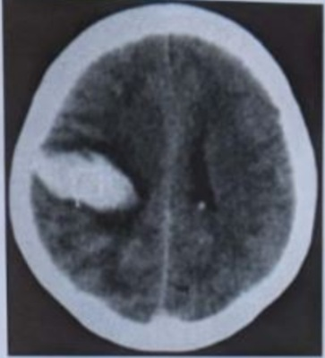
A Hemorragia cerebral secundária.
B Hemorragia subaracnoide espontânea.
C Hemorragia subdural.
D Hemorragia intraventricular.
Questão 74 · Acidente Vascular Cerebral Hemorrágico · 4000098469Acidente Vascular Cerebral Hemorrágico Intraparenquimatoso Paciente de 66 anos de idade, masculino, encontrado no banheiro por familiares. Notaram que o paciente não conseguia movimentar o lado direito e não conseguia falar. Ao exame, hemiplegia à direita com hiporre exia, com manobras cerebelares sem alterações; ausculta cardíaca com ritmo cardíaco irregular, PA 180x100mmHg. Histórico de hipertensão não controlada por má aderência e tabagismo com abstinência há 05 anos, tem relato de familiares de “problemas cardíacos e arritmia”. O exame de imagem inicial realizado é mostrado abaixo. A respeito desse quadro clínico, assinale à alternativa CORRETA.
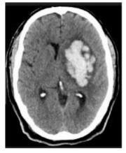
A Iniciar controle pressórico imediato com drogas parenterais, sendo a clonidina venosa em bolus a droga de escolha para esse cenário.
B O evento encefálico representado apresenta íntima relação causal com a arritmia apresentada pelo paciente.
C Tratamento para profilaxia primária tromboembólica pode estar relacionado ao evento encefálico atual do paciente.
D Nesses cenários, o controle glicêmico deve ser rigoroso, mas o controle pressórico pode ser mais parcimonioso.
Questão 75 · Fisiopatologia · Quadro Clínico · Etiologias e Fisiopatologia · 4000090894Um paciente masculino, 90 anos, apresentou hemiplegia direita e disartria súbitas. A tomogra a de crânio evidenciou pequena área hiperdensa (volume: cerca de 20 ml) em lobo parietal esquerdo. O paciente encontra-se vígil, com pontuação de 14 na escala de coma de Glasgow, PA = 120 x 80 mmHg, FC = 80 bpm, FR = 20 irpm. Qual a causa mais provável do quadro neurológico acima descrito?
A Malformação arteriovenosa.
B Uso de anticoagulante oral.
C Vasculite.
D Angiopatia amiloide.
E Ruptura de aneurisma.
Questão 76 · Tratamento Geral · 4000080840Quanto ao manejo da pressão arterial sistêmica dos pacientes em vigência de um acidente vascular encefálico isquêmico em fase aguda e que não são candidatos a terapia trombolítica, é correto afirmar que:
A Devem receber anti-hipertensivos os pacientes que tiverem pressão arterial sistêmica superior a 140/90mmHg.
B Devem receber anti-hipertensivos os pacientes que tiverem pressão arterial sistêmica superior a 185/110mmHg.
C Devem receber anti-hipertensivos os pacientes que tiverem pressão arterial sistêmica superior a 160/110mmHg.
D Só devem receber anti-hipertensivos caso apresentem pressão arterial sistêmica maior que 220/120mmHg na ausência de outras indicações para redução da pressão arterial sistêmica.
Questão 77 · Prognóstico · Etiologias e Fisiopatologia · Quadro Clínico · 4000078106Homem, 58 anos, desenvolve dor crônica no dimídio direito após acidente vascular encefálico hemorrágico (AVCH) à esquerda. A localização mais provável da lesão é:
A putâmen
B cápsula interna
C ponte
D tálamo
Questão 78 · Prof ilaxia Secundária · Tratamento Geral · 4000077545O único agente antiplaquetário que tem e cácia no tratamento agudo do acidente vascular encefálico - AVE, interferindo na recorrência e na mortalidade, é o:
A ácido acetilsalicílico
B dipiridamol
C clopidogrel
D abciximabe
Questão 79 · Trombólise IntraArterial · Trombólise Endovenosa · Tratamento Geral · 4000077531Com referência ao acidente vascular encefálico - AVE, o uso da trombólise venosa usando ativador do plasminogênio tecidual recombinante - rtPA antes de 4 horas desde o início dos sintomas, tem o seguinte objetivo:
A diminuir a possibilidade de perda da consciência que piora o prognóstico
B aumentar em 30% a chance de o paciente apresentar lesões mínimas ou nenhuma lesão
C aumentar em 30% a chance de o paciente não apresentar hemorragia intracraniana
D diminuir significativamente a mortalidade
Questão 80 · Fisiopatologia · Ataque Isquêmico Transitório · Trombólise Endovenosa · 4000049109Considerando a alta prevalência do Acidente Vascular Cerebral e sua importância como causa na morbimortalidade no Brasil e no Mundo, desde 2012 o Ministério da Saúde do Brasil definiu por meio da Portaria 665/2012 a aprovação da linha de cuidados de AVC. Sobre o assunto, é correto afirmar que:
A O AVC é emergência médica tendo como objetivos de tratamento inicial o suporte avançado à vida, recanalização do vaso ocluído com trombolíticos quando houver indicação, prevenção de complicações, profilaxia secundária e início precoce da reabilitação.
B A presença de lesão cerebrovascular isquêmica recente com regressão incompleta dos sintomas neurológicos denomina-se “AVC menor” ou “pequeno icto”.
C Crises convulsivas são mais raras no Acidente Vascular Cerebral Hemorrágico com hemorragia lobar.
D O risco de AVC após AIT é de 70% nas primeiras 48horas.
Questão 81 · Trombólise Endovenosa · Tratamento da Fase Aguda do Acidente Vascular Cerebral Isquêmico · 4000048351Tratamento Geral Um paciente de 55 anos, com antecedentes de hipertensão e doença coronariana chegou ao hospital referindo redução de força em dimídio esquerdo iniciada, subitamente, há menos de uma hora. Ao exame físico, apresentava hemiparesia esquerda com nível de consciência preservado e PA 160x100 mmHg. A tomogra a de crânio foi compatível com um extenso acidente vascular encefálico no território da cerebral média, sem áreas hemorrágicas. O neurologista foi acionado e está a caminho do hospital, com previsão de chegada menor que 30 minutos. Qual sua conduta naquele momento?
A Prescrever captopril sublingual para reduzir PA diastólica abaixo de 100 mmHg.
B Iniciar imediatamente enoxaparina 1 mg/kg de 12/12horas.
C Iniciar infusão definitroglicerina, titulando dose para manter PA sistólica entre 120 e 140 mmHg.
D Acionar a equipe de angiografia para arteriografia cerebral de urgência.
E Monitorizar PA, glicemia digital e nível de consciência.
Questão 82 · Trombose Venosa Cerebral · 4000048272Paciente puérpera após parto cirúrgico (cesárea) sem intercorrências, 20 anos, apresenta cefaleia holocraniana com piora progressiva há 10 dias, sem melhora com analgésicos convencionais e associada a náusea, vômitos e dé cit neurológico. Exame físico com papiledema bilateral e hemiparesia esquerda. O exame tomográ co é mostrado abaixo:.O diagnóstico e conduta terapêutica CORRETOS para o caso são, respectivamente:
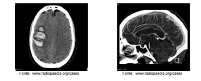
A Trombose venosa cerebral; anticoagulação plena.
B Trombose venosa cerebral; antiagregação plaquetária.
C Trombose venosa cerebral; anticonvulsivante.
D AVC hemorrágico hipertensivo; controle pressórico.
E Hemorragia subaracnoide; clipagem ou embolização de aneurisma.
Revisar: possível letra faltando em enunciado
Questão 83 · Prof ilaxia Secundária · 4000039228P.A.A., 76 anos, internado na Santa Casa de BH há 8 dias devido ao AVEi de etiologia aterotrombótica não trombolisado por ictus maior que 4,5 horas. Paciente é hipertenso e diabético. ECG: ritmo sinusal, regular com FC: 79bpm; ecocardiograma mostrando apenas hipertro a concêntrica leve de ventrículo esquerdo. No momento, está estável hemodinamicamente, com dieta oral liberada e com hemiparesia desproporcionada com predomínio braquial à direita em melhora após início de sioterapia motora. Considerando o caso descrito, assinale a alternativa que apresenta a recomendação MAIS adequada no momento da alta desse paciente.
A Prescrever anticoagulação com rivaroxabana, pois o paciente possui CHA2DS2VASc elevado.
B Prescrever anticoagulação com marevan, pois o paciente possui CHA2DS2V ASc elevado; além de associar estatina.
C Iniciar estatina no momento da alta e anticoagulação após 21 dias do ictus do AVEi.
D Prescrever AAS e estatina, além de otimizar o tratamento da hipertensão e diabetes.
Questão 84 · Trombólise Endovenosa · Trombectomia Mecânica · 4000032671Doença cerebrovascular é importante causa de morbimotalidade em todo o mundo. O seu rápido reconhecimento e tratamento estão associados com melhora dos desfechos clínicos. Sobre o tratamento da fase aguda do Acidente Vascular Encefálico (AVE) isquêmico, assinale a aleternativa CORRETA:
A A trombólise está contraindicada em pacientes com déficits neurológicos avaliados com menos de 5 pontos na escala de AVE do National Institutes of Health.
B A trombólise está contraindicada em pacientes com mais de 80 anos devido ao maior risco de sangramento nessa faixa etária.
C AVE isquêmico prévio, em qualquer época da vida, é contraindicação absoluta ao uso de trombolítico.
D Pacientes com déficits neurológicos extensos e obstrução proximal da artéria cerebral média são elegíveis para a trombectomia mecânica.
Questão 85 · Líquor · 4000031640Paciente de 35 anos sexo feminino, procura o serviço de emergência relatando a "pior cefaleia da vida", iniciada há 20 minutos. Dá entrada extremamente inquieta no pronto-socorro, graduando a dor com nota 10 em escala analógica visual de dor. A tomogra a computadorizada de crânio não revela quaisquer anomalias. É realizada então uma punção lombar. Nesse contexto, assinale o achado de liquor que falaria a favor de hemorragia subaracnoide, em detrimento de acidente de punção.
A Formação de coágulo.
B Xantocromia do sobrenadante.
C Contagem decrescente de eritrócitos na prova dos três tubos.
D Bandas oligoclomais.
Questão 86 · Fisiopatologia · 4000025915Leia o caso clínico a seguir. Uma paciente de 28 anos apresentou cervicalgia que irradiou para hemicrânio direito, com perda visual momentânea desse lado, ao nal do parto vaginal de seu primeiro lho. Persistiu com dor periocular direita. O pré-natal fora seguido normalmente, sem intercorrências. Ela entrara para a sala de parto com sinais vitais normais, mas no nal do procedimento a PA se alterou cando 135 x 85 mmHg. O bebê recebeu Apgar 10 e 10, com peso de 3250 g e altura de 49 cm. No dia seguinte, a paciente apresentou hemiplegia esquerda, com discreta melhora após quatro horas, cando com hemiparesia esquerda grau 3, proporcionada, completa. Foi a primeira gestação da paciente, que era previamente hígida. Conforme o caso, o mecanismo envolvido no insulto cerebral da paciente é:
A Isquemia cerebral por cardioembolismo.
B Hemorragia subaracnoidea por rotura de aneurisma.
C Hemorragia cerebral por doença hipertensiva específica da gravidez.
D Isquemia cerebral por dissecção arterial.
Questão 87 · Fatores de Risco · 4000019035São fatores de risco não modificáveis para acidente vascular cerebral.
A Evento cerebrovascular prévio, diabetes, uso de contraceptivos orais.
B Estresse, raça negra, tabagismo.
C Sexo feminino, raça negra, hipercoagulabilidade.
D Sexo masculino, predisposição genética, raça negra.
Questão 88 · Tratamento Clínico · 4000018034(ADAPTADA) Paciente masculino, 52 anos, procurou atendimento médico em emergência devido a episódio de fraqueza em hemicorpo direito e di culdade na fala iniciada há 2 horas. Nega comorbidades prévias, exceto HAS. Faz uso regular de anlodipino 5 mg e AAS 100 mg. Ao exame PA: 180 x 100 mmHg, pulso 96 batimentos, Saturação de oxigênio: 96% em ar ambiente. Tem NIH de 15 as custas de hemiparesia à direita, disartria e afasia motora, sem alteração de nível de consciência. Com 2 horas e 30 minutos de início do quadro, tem os seguintes exames laboratoriais normais (hemograma, ureia, creatinina, TAP e TTPA) e a TC de crânio evidencia hematoma putaminal de 15 cm³ à esquerda . LEGENDA: PA: Pressão Arterial; HAS: Hipertensão Arterial Sistêmica; NIH: National Institute of Health Stroke Scale; TAP: Tempo de Atividade de Protrombina; TTPA: Tempo de Tromboplastina Parcial Ativado; TC: Tomogra a Computadorizada. Qual a melhor conduta para esse paciente?
A Fator VIIa recombinado.
B Dexametasona 10 mg endovenoso.
C Transfusão de concentrado de plaquetas.
D Anti-hipertensivo com alvo de PA em 140 mmHg.
Questão 89 · Trombólise Endovenosa · Def inição de Acidente Vascular Cerebral · 4000006413Homem de 70 anos, em tratamento regular para IAM prévio e hipertensão, apresenta, há 3 horas, início súbito de tontura, desvio de marcha para a direita, vômitos, diminuição de sensibilidade à esquerda, rouquidão e disfagia. Exame físico geral: PA 160 x 100 mmHg, HGT 138 mg/dL, FC 118 bpm, arrítmico. Exame neurológico: hemiataxia, nistagmo e síndrome de Horner à direita. ECG: brilação atrial. Tomogra a de crânio normal (realizada 30 minutos após a avaliação clínica). Em relação a esse caso, podemos afirmar.
A Trata-se de acidente vascular encefálico da circulação anterior.
B Trata-se de acidente vascular encefálico e o paciente é candidato à terapia trombolítica.
C Não se trata de acidente vascular encefálico, já que a tomografia de crânio encontra-se sem alterações.
D A fibrilação atrial não pode ser considerada como uma etiologia possível do quadro descrito.
E Trata-se de acidente vascular encefálico, mas o paciente está fora da janela para terapia trombolítica.
Questão 90 · Tratamento da Fase Aguda do Acidente Vascular Cerebral Isquêmico · 4000005368O infarto maligno da cerebral média é um subtipo de Acidente Vascular Cerebral Isquêmico com altas taxas de mortalidade. Qual dessas medidas, quando usada dentro dos critérios, é a mais e caz para reduzir a mortalidade dos pacientes abaixo de 60 anos?
A Derivação ventricular externa.
B Manitol regular.
C Hemicraniectomia descompressiva.
D Trombólise venosa.
E Combinação trombólise venosa + arterial.
Questão 91 · Acidentes Vasculares Cerebrais AVC · Trombose Venosa Prof unda TVP · Cirurgia · 4000003718Homem de 36 anos, previamente saudável, apresenta-se com trombose venosa profunda (TVP) do segmento ilíaco femoral direito após viagem de avião. Na investigação diagnostica o paciente é portador de hipercoagulabilidade com mutação do fator V de Leiden. O paciente foi tratado adequadamente com heparina fracionada e warfarina. Subitamente há 2 semanas o paciente desenvolve hemiplegia a esquerda desvio de rima, e disartria. AVCI em hemisfério direito A explicação mais provável para o evento seria?
A Oclusão embólica da artéria carótica interna direita por embolização de forame oval patente.
B Aterosclerose cerebral
C Dissecção de aorta torácica atingindo artérias carótidas
D Flegmasia cerúlea Dolens
E Aneurisma de carótida esquerdo não diagnosticado
Questão 92 · Tratamento da Fase Aguda do Acidente Vascular Cerebral Isquêmico · 4000125357Mulher, 42 anos, gestante de 28 semanas, sem antecedentes patológicos conhecidos, procura o serviço de emergência com queixas de tontura, mal-estar e epigastralgia há 1 dia. Durante o atendimento médico, a paciente apresenta hemiplegia súbita à esquerda. É realizada uma tomogra a de crânio com urgência, a qual não evidencia alterações. A paciente então é transferida para um hospital de referência com hipótese diagnóstica de AVC isquêmico em evolução para realização de trombólise. Chega ao serviço de referência decorridas 3 horas do início do de cit neurológico com PA = 150/105, escala de coma de Glasgow = 14, com hemiplegia mantida à esquerda. Qual a conduta mais adequada para o caso?
A Aguardar exames laboratoriais para realizar o diagnóstico diferencial e tomar a decisão terapêutica.
B Iniciar a trombólise imediatamente para não perder a janela terapêutica.
C A trombólise está contraindicada devido à gestação.
D Administrar anti-hipertensivo e observar a evolução.
E Repetir a tomografia de crânio para avaliar melhor o quadro.
Questão 93 · Quadro Clínico · 4000122943Uma mulher de 65 anos de idade tem uma história de AVC no lobo frontal esquerdo. Qual dos seguintes sintomas psiquiátricos está mais frequentemente associado a um AVC ness área do cérebro?
A Pânico.
B Mania.
C Depressão.
D Obsessões.
E Ansiedade.
Questão 94 · Neurologia · 4000118068Assinale a alternativa correta:
A A enxaqueca só ocorre na idade adulta e quando presente em crianças está relacionada a aneurismas cerebrais ou hemorragia meningea.
B O ataque isquêmico transitório tem duração máxima de 3 horas e deve ser tratado com anticoagulantes orais (dicumarínicos) para evitar evolução para infarto cerebral.
C A síncope vasovagal é a causa mais comum de perda de consciência em adultos jovens e pode ser reproduzida no "tilt-test".
D Infartos cerebrais extensos de natureza cardio-embólica raramente evoluem para transformação hemorrágica, mesmo após heparinização plena endovenosa.
Questão 95 · Fatores de Risco · 4000116656Quais são os principais fatores de risco para acidente vascular encefálico?
A Tabagismo e obesidade.
B Diabetes e obesidade.
C HAS e hipercolesterolemia.
D Fibrilação atrial e estenose de artéria carotídea.
E Sexo masculino e ingestão de álcool.
Questão 96 · Clínica Médica · Exames de Imagem Neurovascular · Acidentes Vasculares Cerebrais AVC · 4000108384TC de crânio deve ser obtida o quanto antes possível em todos os pacientes com AVC, para diferenciar entre infarto e hemorragia, pois a diferenciação clínica dessas entidades pode ser muito difícil. Ocorre que nessa tarde, o corpo de bombeiros trouxe à sala de emergência paciente em franca insu ciência respiratória aguda, logo após perder a consciência e convulsionar. Somente NÃO seria compatível o seguinte item abaixo:
A AVCs isquêmicos aparecem como áreas hipodensas (escuras na TC), diferentemente AVCs hemorrágicos aparecem como áreas hiperdensas (claras na TC).
B Infartos da circulação posterior (tronco cerebral e cerebelo) podem ser facilmente visualizados na TC.
C Entretanto, embora a TC seja sempre anormal nas hemorragias, ela pode ser normal nas primeiras 24 horas de evolução do infarto.
D Portanto, devemos interpretar seus achados de acordo com o tempo de evolução dos sintomas. Quando normal, a TC deve ser repetida após 24 a 48 horas, para confirmar o infarto.
Questão 97 · Demências · Clínica Médica · Síndromes Cognitivas · 4000108352Pela manhã, em um de seus primeiros atendimentos, foi chamado para avaliar uma senhora trazida pelos lhos, pois havia sido encontrada caída próximo ao sofá da sala de sua casa. Seu histórico referia Diabetes e Hipertensão, além de histórico antigo de tabagismo. Dentre os achados, somente NÃO seria compatível o seguinte:
A Dependendo do hemisfério cerebral em que ocorre o AVC, diferentes manifestações podem ser observadas.
B Oclusões à esquerda causam afasia (incapacidade de expressar ou compreender a fala), alexia (incapacidade de leitura), agrafia (incapacidade de escrever) e acalculia (incapacidade de calcular).
C Oclusões à direita causam negligência (falta de reconhecimento) do lado esquerdo do corpo e perda da prosódia da fala.
D Apraxia (dificuldade de realizar tarefas motoras previamente aprendidas, como pentear o cabelo ou trocar de roupa) pode ocorrer por lesões somente à direita.
Questão 98 · Ataque Isquêmico Transitório · Síndromes do Território VértebroBasilar · 4000091280Um paciente do sexo masculino, 68 anos de idade, hipertenso de longa data, tabagista por 50 anos e com diabetes mellitus diagnosticada há 20 anos, chega ao serviço de pronto-atendimento com relato de que, ao ter iniciado atividade física com membro superior esquerdo, apresentou tonteira seguida por síncope e de que não se recorda bem do que aconteceu. Os acompanhantes informaram que ele apresentou fala arrastada e desvio da comissura labial. Porém, após 6 horas de observação no serviço de pronto atendimento, todas as alterações já haviam se normalizado. Foram solicitados, à admissão, glicemia capilar, que revelou 86 mg/dl; tomogra a computadorizada do encéfalo, que se mostrou normal e duplex scan de carótidas e vertebrais, que revelou ateromatose carotídea bilateral com placas ulceradas, com inversão de uxo sisto/diastólico, contínuo, em artéria vertebral esquerda. A artéria vertebral direita apresentava-se com uxo ascendente, com velocidade normal. A inversão do fluxo na artéria vertebral esquerda pode ser explicada pela
A oclusão da artéria subclávia esquerda proximal à origem da artéria vertebral.
B lesão aterosclerótica sub-oclusiva na origem da artéria vertebral.
C oclusão da carótida interna esquerda proximal à origem da cerebral média.
D lesão aterosclerótica sub-oclusiva em artéria carótida interna.
Questão 99 · Síndrome da Artéria Cerebral Anterior · Síndrome da Artéria Cerebral Posterior · 4000083757Síndromes do Território VértebroBasilar Os acidentes vasculares cerebrais são a segunda maior causa de mortalidade mundial e a maior causa de invalidez em adultos nos EUA. Sobre os AVCs isquêmicos, marque a alternativa CORRETA:
A No AVC da artéria cerebral média encontra-se fraqueza contralateral e perda sensitiva na face e membro superior, além de hemianopsia e desvio do olhar para o lado da lesão.
B Na oclusão da artéria cerebral anterior podem causar hemianestesia ipsilateral completa e dor lancinante.
C Na oclusão da artéria basilar ocorre fraqueza do neurônio motor inferior e deficit sensitivos em MMII.
D A oclusão da artéria cerebral anterior está relacionada à síndrome do cativeiro.
Questão 100 · Investigação · Quadro Clínico · 4000070813Num plantão de pronto-socorro, são admitidos três pacientes com quadro súbito de diminuição da consciência. Paciente 1: homem de 65 anos, hipertenso com tratamento irregular. A família relata quadro agudo de cefaléia náusea, vômito e provavelmente um episódio de convulsão tônico-clônica. Está comatoso, com hemiplegia esquerda e pressão arterial de 190 X 160 mmHg. Paciente 2: mulher de 30 anos, sem antecedentes mórbidos, com quadro súbito de cefaléia holocraniana de forte intensidade, acompanhada de náusea. Está sonolenta, sem dé cit motor, com sinais de irritação meníngea e pressão arterial de 140 X 90 mmHg. Paciente 3: homem de 50 anos, diabético, tabagista, com antecedente de febre reumática e com brilação atrial há pelo menos 12 meses. Está sonolento, com hemiparesia esquerda e pressão arterial de 150 X 100 mmHg. São realizadas tomografias computadorizadas dos 3 pacientes, expostas abaixo: É mais provável que as imagens I, II, III correspondam, respectivamente, aos pacientes: Respostas: 1 12 23 34 45 56 67 78 89 100
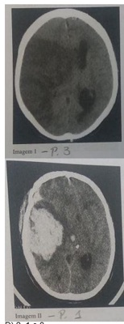
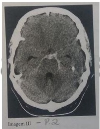
A 3, 2 e 1
B 3, 1 e 2.
C 2, 3 e 1.
D 2, 1 e 3.